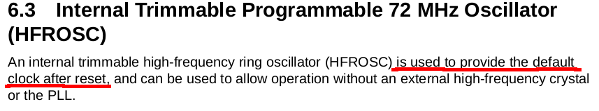

En este post se busca implementar el programa blink en una placa hifive1 rev b utilizando ensamblador. Vale la pena mencionar que la placa posee un led RGB, por lo que el blink se hará utilizando el color blanco, formado al encender los tres leds simultaneamente.
La idea de hacer el post surge a partir de la imperdible charla Microcontroller Firmware from Scratch dada por Nikolai Kondrashov en el FOSDEM 2019, sumado a mis ganas de programar en ensamblador de RISC-V.
Notas:
- El post Getting to know RISC-V through the hifive1-revb board de Jonas Danielsson aborda detalles que no fueron tomados en cuenta en este post como ser un mejor control del tiempo utilizando el Real Time Clock.
- En caso de por error sobreescribir el bootloader (
0x20000000~0x20010000) se puede utilizar hifive1-recover para volver a escribir el bootloader de sifive.
Materiales
A continuación se detallan los materiales utilizados:
Hardware
- Placa hifive1 rev b la cual se desea programar, es el target.
- Cable usb para conectar la placa a la pc proveyendo la alimentación de la placa y posibilitando la carga del programa.
- PC con sistema operativo debian buster, el host en el que se realizarán las tareas de programación.
Software
- Programa picocom utilizado para comunicarse con el target
utilizando uart (para instalarlo hacer
sudo apt-get install -Vy picocom). - Compilador gcc con soporte para RISC-V 32-bits. El paquete
a instalar en debian es
gcc-riscv64-unknown-elf- ver Apendice1 para detalles de instalación
Documentación
ISA RISC-V
- The RISC-V Instruction Set Manual Volume I: Unprivileged ISA
- The RISC-V Instruction Set Manual Volume II: Privileged Architecture
- Guía Práctica de RISC-V: El Atlas de una Arquitectura Abierta
- RISC-V Assembly Programmer's Manual
- rv8's RISC-V Assembler Reference
- rv8's RISC-V Instruction Set Reference
Placa
- HiFive1 Rev B Getting Started Guide
- HiFive1 Rev B01 Schematics
- Freedom E310-G002 Manual
- Freedom E310-G002 Datasheet
Programas
Programa blink
Codificación
La codificación del programa blink se encuentra en el archivo blink.s y a continuación se pasará a explicar el código.
En el preámbulo se indica que el programa se encontrará en la sección de texto
y se define el simbolo global _start, el cual será además el entry point del
programa.
.section .text
.global _start
_start:
Se encenderán los leds RED, GREEN y BLUE simultaneamente para realizar el parpadeo (blink) del led en color blanco. De HiFive1 Rev B01 Schematics los leds se encuentran conectados a GPIO_22, GPIO_19 y GPIO_21 respectivamente.
Hay que tener en cuenta que los leds están conectados a 3.3V (señalado en el diagrama por el rectángulo rojo), por lo cual la lógica para encenderlos es active low.
Para habilitar las salidas GPIO hay que indicar en la GPIO Instance 0, que se encuentra en la dirección de memoria 0x10012000, cuales salidas se habilitarán.
Esto se hace escribiendo en el offset 0x08 un entero con los bits a 1 en las posiciones correspondientes al número de pin que se desea habilitar para escritura.
Para utilizar una lógica active high en lugar de una active low es posible indicar que se desea invertir la salida utilizando el offset 0x40. Al igual que con el caso anterior, hay que escribir un entero indicando los pines en los que se desee habilitar el xor o inversión.
Por último, en el offset 0x0C se escribe el valor que tendrá la salida.
A partir de aquí se utilizará la directiva de ensamblador .set para definir símbolos en el programa y de esa forma evitar el uso de constantes numéricas, que si bien por el tamaño del código no sería un problema es una buena práctica a utilizar en programas de mayor porte:
.set GPIO_INSTANCE_0, 0x10012000
.set OUTPUT_EN, 0x08
.set OUTPUT_XOR, 0x40
.set OUTPUT_VAL, 0x0c
En nuestro caso los pines GPIO a habilitar son el 19 (verde), 21 (azul) y 22 (rojo), con lo cual nos queda (en binario y hexadecimal):
0000 0000 0000 1000 0000 0000 0000 0000 verde 0x00080000
+ 0000 0000 0010 0000 0000 0000 0000 0000 azul 0x00200000
0000 0000 0100 0000 0000 0000 0000 0000 rojo 0x00400000
----------------------------------------- ----------
0000 0000 0110 1000 0000 0000 0000 0000 0x00680000
Lo anterior es más fácil de expresar utilizando la directiva de ensamblador
.set, la cual, aparte de una constante permite utilizar expresiones:
.set ALL_LEDS, (1 << 19) | (1 << 21) | (1 << 22) # Green/Blue/Red
De lo anterior, el código de setup del controlador GPIO queda:
li x2, GPIO_INSTANCE_0
li x3, ALL_LEDS
sw x3, OUTPUT_EN(x2)
sw x3, OUTPUT_XOR(x2)
donde se aprovecha que la instrucción sw permite utilizar un inmediato como
offset.
Como ya se indicó previamente, para prender los leds en blanco se debe escribir
el valor 0x00680000 en 0x10012000 + 0x0c, o utilizando los valores
previamente cargados en los registros x2 y x3 en el setup:
sw x3, OUTPUT_VAL(X2)
Para apagar los leds se escribe el valor 0 en la dirección anterior:
sw x0, OUTPUT_VAL(x2)
El último detalle es que luego de cada cambio al valor de salida de los pines GPIO se realiza un retardo. Para ello se salta a una rutina que simplemente decrementa un contador en un loop. Se desea conocer la cantidad de iteraciones necesarias para provocar un retardo de aproximadamente 1 segundo.
De Freedom E310-G002 Manual se obtiene la frecuencia del reloj por defecto

El detalle es que por defecto la frecuencia tiene un valor de 13.8MHz y una precisión de ¡±50%!.
Ya que no se necesita un valor muy preciso y para simplificar la codificación de este primer ejemplo, se supondrá que la frecuencia de la placa es de 13.8MHz.
De allí que para contar un segundo se utilizará un loop de la forma:
delay:
li x4, ONE_SECOND
delay_loop:
addi x4, x4, -1
bne x4, x0, delay_loop
siendo ONE_SECOND la constante que se desea calcular. Como el loop consta
solo de las instrucciones addi y bne, las cuales no están incluidas entre
las excepciones que utilizan más de un ciclo por instrucción
se tiene que, aproximadamente, la cantidad de iteraciones del loop para
acercarnos a un retarde de un segundo deben ser de
13.8 x 10^6 / 2 = 6.9 x 10^6
Compilación
Para compilar el programa blink.s se utiliza el script build.sh.
En este se realizan varias etapas:
-
Se ensambla el archivo
blink.s, obteniendoblink.o. -
Se linkea el archivo
blink.opara obtenerblink.elf. Para este paso debe utilizarse un linker script, creado enblink.ld, que indique que la sección de texto comienza en0x20010000y la de datos (que en este caso particular no utilizaremos) comienza en0x80000000. También se indicará el tipo de memoria (lectura/escritura/ejecución) y su tamaño.Si se utilizara un segmento de datos habría que copiar los datos del segmento .data almacenados en la memoria flash a la memoria RAM.
¿Porqué se utiliza 0x20010000 para cargar el programa?
De HiFive1 Rev B Getting Started Guide:
El código del bootloader ya no está disponible, pero en el foro de sifive se indica que puede encontrarse en una versión antigua de freedom-e-sdk, bajo el nombre double_tap_dontboot.
-
Se convierte el archivo
blink.elfablink.hexen formato iHex ya que es el utilizado por defecto por el programaJLinkExepara cargar el programa en la placa hifive1b.
Upload
Por último, se sube el programa a la placa utilizando el script upload.sh y se puede apreciar el script parpadeando:
Conclusiones
Como bien suele indicarse, el programa blink es de los más sencillos,
radicando su utilidad en permitirnos probar que las herramientas necesarias para
compilar y cargar a la placa estén funcionando.
Personalmente prefiero obtener el RISC-V GNU Toolchain de los repositorios de debian en lugar de estar descargandolos de la página de sifive. Las contras de este enfoque son:
- A la fecha el paquete
gcc-riscv64-unknown-elfse encuentra en los repositorios deunstable, y es probable que la próxima estable,bullseyeesté disponible dentro de tres años, lo que no es muy alentador. - La versión de gcc provista por sifive parece estar más actualizada que la provista por debian testing. Inicialmente sifive utilizaba un fork de gcc al cual agregó soporte para RISC-V. Se supone que al día de hoy el código relativo a RISC-V ya está diponible en gcc pero es de esperar que los fixes o nuevas funcionalidades primero se encuentren en la versión provista por sifive.
Si bien para no complicar más el setup del entorno se utiliza el paquete jlink
provisto por SEGGER (privativo), un pendiente es utilizar openocd en su
lugar que es open source.
Se realizó el programa en ensamblador para probar de usar directamente el ISA RISC-V en lugar de hacer el programa C, lo que hubiera quitado la posibilidad de practicar el uso de instrucciones RISC-V.
Apendice 1 - instalación de gcc-riscv64-unknown-elf
Se desea instalar el paquete gcc-riscv64-unknown-elf en debian buster (10). El
problema es que el paquete se encuentra en el repositorio de testing (bullseye),
por lo cual para agregarlo se debe:
-
Agregar repositorio de testing
$ sudo tee /etc/apt/sources.list.d/testing.list <<'END' deb http://deb.debian.org/debian testing main END -
Agregar configuración de pinning en apt para evitar que se actualicen los paquetes con sus versiones en testing:
$ sudo tee /etc/apt/preferences.d/99-testing-repository <<'END' Package: * Pin: release a=testing Pin-Priority: -100 END -
Actualizar lista de paquetes e instalar
gcc-riscv64-unknown-elf:$ sudo apt-get update $ sudo apt-get install -Vy gcc-riscv64-unknown-elf -
Remover el repositorio de testing, la configuración de pinning y borrar las listas de paquetes obtenidas de testing:
$ sudo rm /etc/apt/sources.list.d/testing.list /etc/apt/preferences.d/99-testing-repository $ sudo apt-get clean